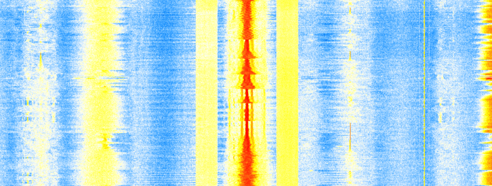

Personal Project — Due to their rapid switching, class D amplifiers are notorious
as sources of unintended radiation. Using a software-defined radio, the amplifier emissions
are measured and demodulated to audio.
Graduate Research — Numerical phonon calculations in Julia reveal that topological band crossings
in CdTe lead to double arcs in the (110) surface dispersion
Personal Project — By abandoning linear operation, class D amplifiers can attain high power
efficiency without sacrificing fidelity. Here I design, simulate,
and build a full-bridge, closed-loop class D amplifier.
WELCOME
to my personal website! Here you will find documentation on my various past projects as well as my collection of notes which cover a wide range of topics.